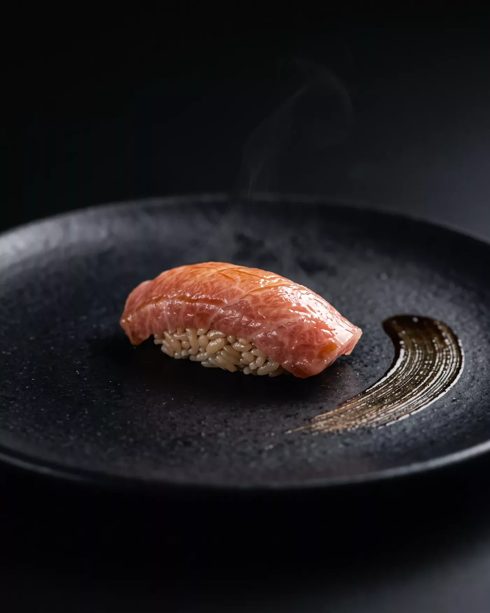

第一品 · ichi
Sakizuke
先付 · 茶碗蒸しSilken egg custard, the first steam of the evening. The dashi was drawn at dawn.
Fourteen seats. One evening.
the first course waits belowSilken egg custard, the first steam of the evening. The dashi was drawn at dawn.
Flounder, aged three days in cedar. Nothing is added. Nothing needed to be.
Blackthroat perch over binchōtan. The skin whispers; the fat answers.

Bluefin belly, brushed with nikiri. Eleven seconds after it is set down, it is gone.
Hokkaidō sea urchin, still as cold as the water it left this morning.
Sea eel steamed soft, glazed with a tare older than this room.
A closed cypress bowl arrives. Lift the lid — the broth exhales for you.
Roasted-tea ice, one drop of black sugar. The evening ends as it began — quietly.
One slab of two-hundred-year hinoki, fourteen guests, no menu in writing. Rest a hand on a seat to see tonight’s ritual. One of them is being kept for you.
One seating a night, five nights a week. Choose an evening; we will do the rest by hand.
Seat 8 · the quiet corner · 17:30
The seat is held. Nothing to confirm, nothing to pay —
only an evening to keep free.
KURO · 3-14 kagurazaka, tokyo — a fictional restaurant, set for FABLE/25
no telephone. no photographs of courses one through three.